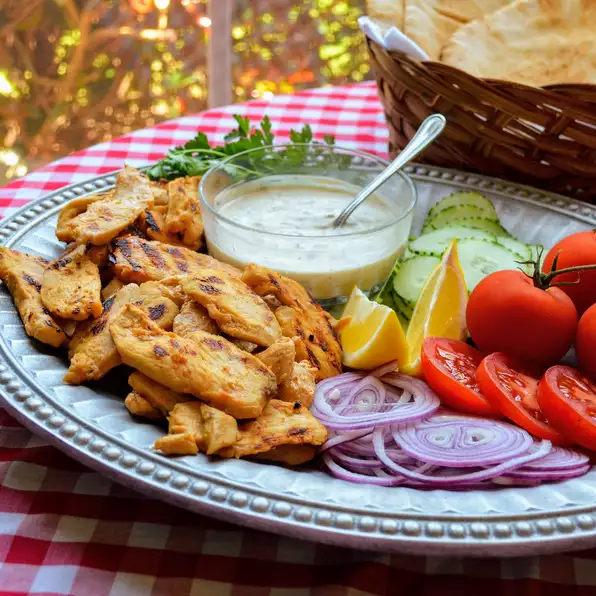

A delicious arrangement of our yogurt-marinated chicken shawarma with tzaziki sauce, vegetables, and herbs
Description
The most delicious shawarma chicken you'll ever eat! Serve with pita bread, tomato and/or cucumber slices, tahini, or garlic sauce. Also great atop fattoush!
Combine yogurt, lemon juice, 1/4 cup oil, vinegar, garlic, salt, paprika, cumin, and oregano in a large glass or ceramic bowl; mix well.
Add chicken and toss to evenly coat. Cover the bowl with plastic wrap and marinate in the refrigerator for 8 hours to overnight.
Remove chicken from the marinade and shake off excess. Discard the remaining marinade.
Heat 2 tablespoons oil in a large skillet over medium-high heat. Cook chicken in hot oil in batches until tender and browned, about 5 minutes per batch.
An instant-read thermometer inserted into the center should read at least 165 degrees F (74 degrees C).